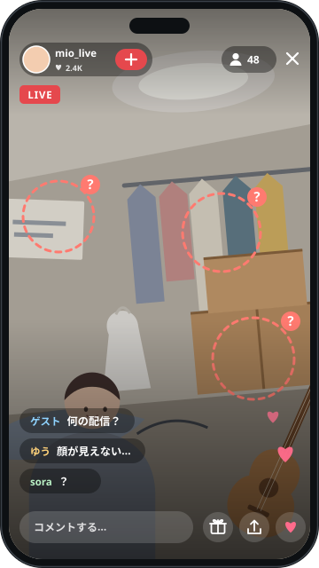
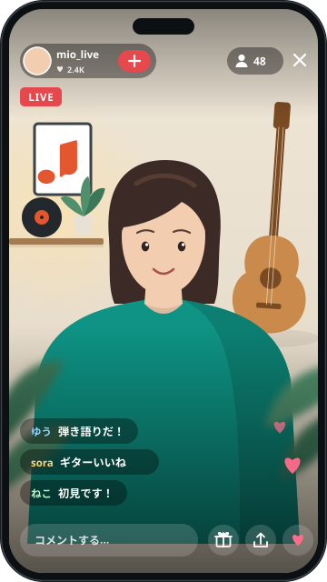
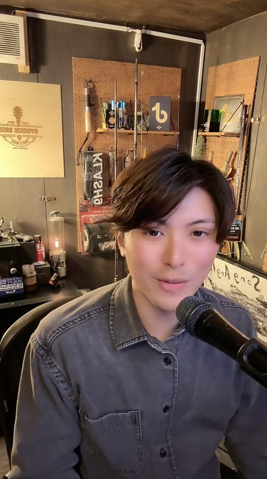
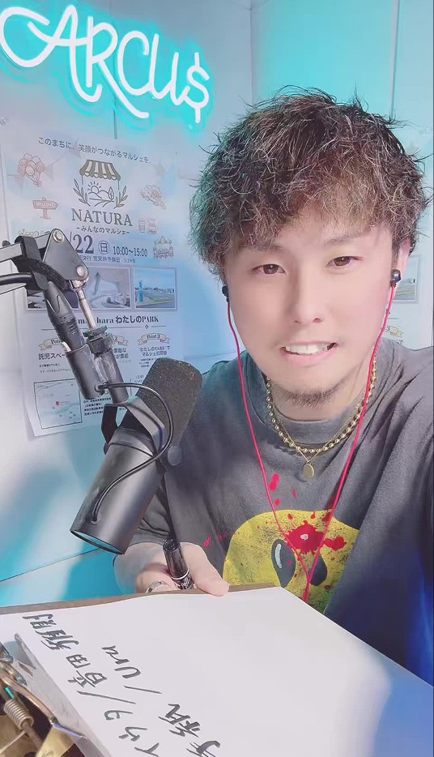
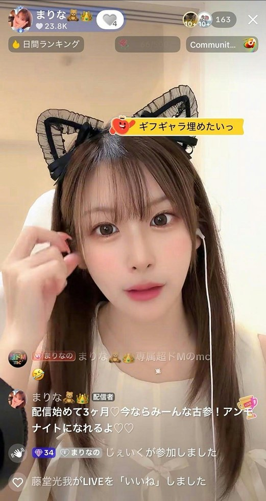
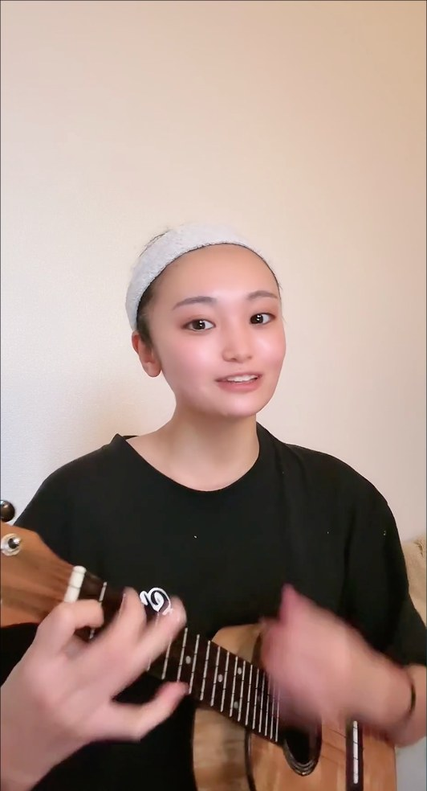
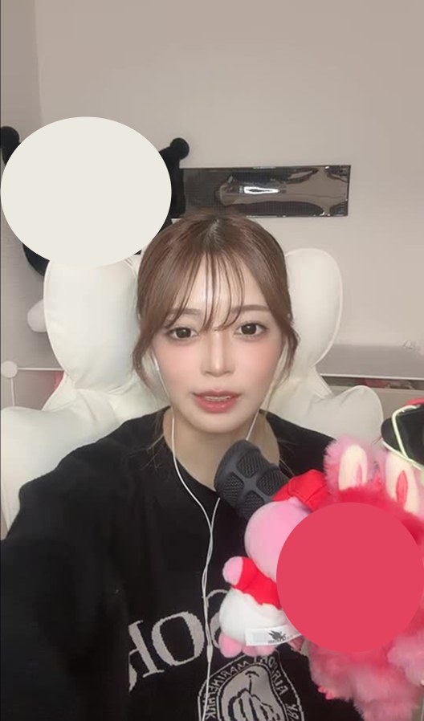

配信前に差がつく基礎攻略コンテンツ01/ 03
良いトークの前に、画面で離脱されない。初見が見やすいLIVE画面の作り方
背景・前景・画角を整えて、「誰が主役で、何の配信か」が一瞬で伝わる画面へ。
- 顔位置が不自然
- 背景が散乱
- 重要物がUIに被る
- 配信テーマが不明
- 余白が不自然
BAD

BAD: 視線が散る
GOOD

GOOD: 主役が一瞬で分かる
つまみを左右に動かして、見くらべる
- 配信者が主役
- 目線が自然
- 背景に意味がある
- 前景で奥行き
- UIを避けた配置
学んだ先に変わること
- 配信者がすること画面が整う
- 視聴者誰が主役か・何の配信か伝わる
- 視聴者が内容を理解しやすい
- LIVE見続ける・反応する機会が増える
- その先会話・ファン化・LIVE成長の入口になる
TikTok LIVEでは、視聴時間・いいね・コメント・フォロー・ギフトなどの視聴者の反応が、おすすめに関係する手がかりの例として考えられます。
- 画面
- 視聴者の体験
- 視聴者の行動
- LIVEの伸び
攻略ノート
このコンテンツで学べること

背景
「世界観を作る」だけではなく、会話が始まる背景の作り方。
LIVEに効く理由背景の小物は、「それ何？」というコメントのきっかけにもなります。
前景
同じ空間にいるような奥行きと臨場感の作り方。
LIVEに効く理由手前・あなた・背景の3つの層ができ、同じテーブルに座っているような安心感を届けられます。
画角
表情と視線が自然に伝わるカメラ位置・余白の整え方。
LIVEに効く理由表情と視線が見えると、コメントへの反応が視聴者に届きやすくなります。
STEP01背景
背景は、あなたの「世界観」が詰まった空間
背景は、あなたの配信の個性を表現する大切な空間です。
画面の中で、あなた自身の次に大きなインパクトを与えるのが背景です。視聴者は背景を見るだけで趣味を把握し、親近感を抱きやすくなります。
背景の作り方は2つ。「小物で伝える」か「すっきりさせる」か。
やり方 1｜小物で、キャラクターや個性を伝える
配信の主なテーマを決める
ゲーム、音楽、読書、ビューティなど。
テーマが直感的に伝わる小物を選ぶ
フィギュア、照明、ポスター、本など。
選んだ小物を背景に置く
見ただけでテーマが伝わる位置にします。


背景の小物は、コメントのきっかけにもなります。置く物は、意味のある1〜3個ほどに絞ります。
やり方 2｜トークと表情を主役にする「引き算」
向いている配信
表情やリアクション、リアルタイムの会話そのものが主役の配信。
背景を思い切ってすっきりさせる
シンプルな壁紙やカーテンにします。
落ち着いた間接照明をひとつ置く
視線が、あなたの「顔と声」に集まります。


STEP02前景
前景は、画面に「立体感」をもたらす空間
画面の手前の隅に、小物を少しだけ映り込ませます。画面に奥行きが生まれます。
用語
前景（ぜんけい）
カメラのレンズとあなたの間にある、手前の空間のこと。多くの配信者が見落としがちなポイントです。
画面の中に3つの層を作る
前景
手前の小物
中景
あなた
背景
後ろの空間
3つの層が生まれると、同じ空間、同じテーブルに座っているかのような臨場感と安心感を届けられます。
手前の隅に置く小物の例
配信用のスタンドマイク
マグカップ
小さな観葉植物
STEP03構図（画角）
構図で、「居心地の良さ」を生み出す
最後に、カメラレンズに自分の姿をどう収めるかを決めます。見るのは、目線の高さと、配置と余白です。
カメラレンズの高さは、あなたの目線と水平に合わせる。
BADやりがち
- カメラの位置が高すぎる → 画面が少し小さく見えてしまう
- カメラの位置が低すぎる → 視聴者を見下ろしているような印象になる
なぜ良い？視聴者と同じ目線になり、心の距離が縮まります。
視聴者を落ち着かせる、配置と余白
画面の真ん中に収まる
視聴者の視線がすっと落ち着きます。
頭の上のスペースを見る
頭が上端にぴったりくっついていないか、天井が映り込みすぎていないか。
握りこぶし1個分ほどの余白を残す
適切な余白が、画面を洗練させます。

仕上げに、実機のプレビューで、顔や大事な物が画面上の表示に隠れていないかを確かめます。
コツ
仕上げの1秒テスト
音を消して、画面を1秒だけ見ます。何をする人か、どんな雰囲気かが分かるかを確かめます。

背景は「コメントの種」にする開く
小物は飾りだけではありません。意味がある物は、視聴者が話しかけるきっかけになります。
背景
目を引く物
コメント
会話
例コメントの種になる物の例
好きな作品
楽器
本
ゲーム関連
地域に関係する物
趣味
挑戦中のイベント
視聴者それ○○？
視聴者私も好き！
季節・イベントを画面に入れる開く
ハロウィン、クリスマス、誕生日、周年、TikTokのイベント、ランキング挑戦、記念配信。こうした日は、画面に小さな装飾を入れます。
小さな装飾が生む、3つの価値
小さな装飾
- コメントのきっかけ「今日ハロウィン仕様だ！」
- 一緒に体験している感覚いつもの配信ではない、特別な空間になる
- 記憶の目印「あのクリスマス配信」のように、後から思い出しやすくなる
画面内に「会話できる余白」を残す開く
背景へ、物を置きすぎません。
BADやりがち
コメントのきっかけを増やそうと、小物をどんどん置く
GOODこう変える
意味のある、目を引く物を1〜3個ほどに絞る
なぜ良い？小物を増やしすぎると、配信者・テーマ・大事な物の優先順位が消えます。
隠れないか・近すぎないかを、実機のプレビューで確かめる開く
コメント・ボタン・ギフトなどの表示（UI）は、画面に重なる前提で考えます。
隠れていないかを見るもの
コツ
重なる位置は端末によって違うので、決まった数値では考えません。
カメラとの距離も、同じプレビューで見ます。カメラへ近づきすぎると、一部の端末やレンズでは、顔の遠近感が不自然になりやすくなります。
ここが要点
「目線の高さ」だけでなく、自分が自然に見える距離もプレビューで決めます。端末によって違うので、決まった距離はありません。
ファン化・応援につながる理由
画面作りは、コミュニケーションを見える状態にする作業
ただ綺麗にする作業ではありません。
- 視聴者がコメント
- 配信者が反応
- 表情・視線・リアクションが見える
- 「自分のコメントが届いた」
- 距離が縮まる
応援が伝わる画面を作る
ギフトや応援は、送った瞬間で体験が終わりません。
これは次の応援を要求するテクニックではなく、応援した人の満足度を高める画面設計です。
- ギフト
- 配信者が気づく
- 喜び・驚き・感謝が見える
- 応援した視聴者へ反応が返る
- 「応援してよかった」という体験
LIVEとSNSを循環させる
SNSを、LIVE前の「見た目のリサーチ」にも使う
- AとBを作る
- ショート動画・SNSで聞く
- 反応を見る
- LIVEへ戻す
くり返す
最後の「LIVEへ戻す」から、最初の「AとBを作る」へ戻る
画角A／画角B、または背景A／背景Bを、ショート動画・ストーリー・SNSへ出します。
「どっちが見やすい？」「どっちの背景好き？」と聞き、反応を見てLIVEへ戻します。
やってみる行動
同じ服・同じ場所で、A（いまの背景や画角）とB（変えた背景や画角）を撮り、ショート動画やSNSで「どっちが見やすい？」と聞く。
少ない数の反応を、「アルゴリズムの真実」とは断定しません。
配信前に思い出す3つ
カメラは目線の高さ。頭の上に握りこぶし1個分の余白
背景の物は、意味のある1〜3個に絞る
実機のプレビューで、顔と大事な物が隠れていないか見る

次の配信で試すこと
できた数 0 / 5
全部試せました。下の「できた目安」を確かめましょう。
できた目安
整える前と後を見比べて、「どちらが主役・表情・配信内容を理解しやすいか」を自分で1つ説明できたら、次へ。